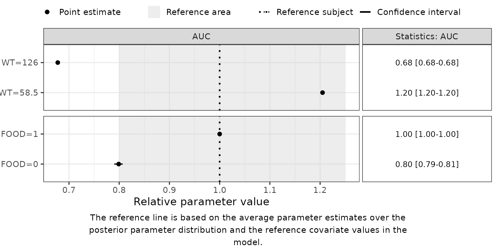

3. Deep Dive: Secondary Parameters
Part3-deep-dive-secondary-parameters.Rmd
suppressPackageStartupMessages({
library(PMXForest)
library(ggplot2)
})
theme_set(theme_bw(base_size = 14))
set.seed(865765)Introduction
A Forest plot shows whatever the parameter function returns. When that function is generated by createParamFunction(), what it returns is exactly what $PK derives – the structural parameters of the model file, and nothing else.
That is a boundary rather than a shortcoming. The dose an AUC is taken over, the interval a steady-state Cmax needs, the time a survival probability is evaluated at: none of them appear in $PK, so no translation of $PK could produce them. They are decisions about the question being asked, not properties of the model.
Which is why the quantities a plot is about are often the ones the generator cannot give you – an exposure AUC, a terminal half-life, a steady-state Cmax, an event probability. Those are secondary parameters: computed from the structural ones, sometimes in closed form, sometimes by solving the model for a particular dosing design, and always added by you.
createParamFunction() translates $PK into an R parameter function automatically. Its secondary argument attaches the derived quantities in the same call, so the whole parameter function – structural part and secondary part – is generated as one object that getForestDFSCM() can consume directly.
This vignette assumes you have met createParamFunction() already. If not, Preparing Forest plot inputs covers what a parameter function must do (Section 2.1), how one is generated from $PK (2.2) and when the generator refuses (2.3); the Walkthrough puts it in the context of a whole Forest plot.
Each secondary entry names a variable to add to the return list; its value is one of
- a line of R code –
secondary = list(AUC = "500 / CL"); - the path to an
.Rfile of arbitrary code, including adeSolveormrgsolvesimulation –secondary = list(CMAX = "cmax.R"); or - a list with that
sourceplus any constants the code needs –secondary = list(CMAX = list(source = "cmax.R", dose = 100, tau = 12)). Each constant is bound (dose <- 100,tau <- 12) immediately before the code, inside the samelocal()block, so a reusable file is parametrised at the call site instead of hard-coding the regimen. A bare string is justsourcewith no constants.
A snippet is spliced into the generated function, so it can use anything in scope there: the structural parameters by name (CL, FREL), thetas, any constants passed alongside source, and the covariate row df.
df is available, but know what is in it. It is one row of whatever the plotting function was handed – a row of dfCovs for getForestDFSCM(), a row of the analysis data for getForestDFemp(). So df$WT works in both, because WT is a covariate either way. Something like df$DOSE works only in the empirical workflow, and only if DOSE is a column of the data you passed; in a parametric plot dfCovs holds covariates and nothing else, so df$DOSE is NULL, the expression returns a zero-length value, and getForestDFSCM() later stops with
Error: replacement has length zerowhich names neither the secondary parameter nor the column that was missing.
A dose is usually a constant of the analysis rather than a covariate, which is why it is written literally above and supplied through the source + constants form below. Reach for df when the quantity genuinely varies with the row – df$WT in an allometric expression, say.
A file’s text is inlined into the generated source, so the result stays a self-contained artifact: it does not depend on the file still being on disk when the parameter function later runs on a worker process.
The two parts below are independent:
-
Part 1 derives
AUC, an elimination rate and a half-life in closed form. It has no compiled dependencies and runs anywhere – the code and output on this page are from a live run. -
Part 2 computes a steady-state
Cmaxwith anmrgsolvesimulation. Its chunks are not executed when this vignette is built; the outputs shown there are illustrative. The code is runnable if you have a workingmrgsolve.
Part 1 – closed-form secondary parameters
1.1 The structural parameter function
Start from the bundled run7 control stream and ask for the structural parameters.
modFile <- system.file("extdata", "SimVal/run7.mod", package = "PMXForest")
extFile <- system.file("extdata", "SimVal/run7.ext", package = "PMXForest")
base <- suppressWarnings(
createParamFunction(modFile, parameters = c("CL", "V"), quiet = TRUE)
)
base$functionListName
#> [1] "CL" "V"run7’s $PK also computes FREL (relative bioavailability); the generator keeps that intermediate assignment, so a secondary block spliced in afterwards can use FREL by name.
1.2 Attach the secondary parameters
Three entries, showing each form:
-
AUC– a config list:sourceis a one-liner, anddoseis a constant supplied at the call site (100 mg here). Steady-stateAUCover a dosing interval for a linear model isF * dose / CL. -
KEL– a bare snippet,CL / V. -
THALF– another snippet that usesKEL: entries are emitted in order, so a later one may refer to an earlier one.
out <- suppressWarnings(createParamFunction(
modFile,
parameters = c("CL", "V"),
secondary = list(
AUC = list(source = "dose * FREL / CL", dose = 100),
KEL = "CL / V",
THALF = "log(2) / KEL"
),
quiet = TRUE
))
out$functionListName # CL, V, then the three secondaries
#> [1] "CL" "V" "AUC" "KEL" "THALF"
out$primaryNames
#> [1] "CL" "V"
out$secondaryNames
#> [1] "AUC" "KEL" "THALF"The tail of the generated source – the constant binding, then each entry inside its own local() block, then the extended return list:
[1] " FREL <- TVFREL # ETA() -> 0 (typical value)"
[2] " CL <- TVCL # ETA() -> 0 (typical value)"
[3] " V <- TVV # ETA() -> 0 (typical value)"
[4] ""
[5] " ## ---- Secondary parameters -------------------------------------------------"
[6] " ## AUC (inline snippet)"
[7] " AUC <- local({"
[8] " dose <- 100"
[9] "dose * FREL / CL"
[10] " })"
[11] " ## KEL (inline snippet)"
[12] " KEL <- local({ CL / V })"
[13] " ## THALF (inline snippet)"
[14] " THALF <- local({ log(2) / KEL })"
[15] ""
[16] " list("
[17] " CL = CL,\n V = V,\n AUC = AUC,\n KEL = KEL,\n THALF = THALF"
[18] " )"
[19] "}"
[20] ""
[21] "## functionListName <- c(\"CL\", \"V\", \"AUC\", \"KEL\", \"THALF\")"
[22] "## noBaseThetas <- 14" 1.3 Evaluate at the final estimates
Read the function in and call it for a reference subject.
paramFunction <- eval(parse(text = out$code))
thetas <- as.numeric(
getExt(extFile)[getExt(extFile)$ITERATION == -1000000000, 2:15]
)
paramFunction(thetas = thetas, df = data.frame(WT = 75, FOOD = 1))
#> $CL
#> [1] 11.9074
#>
#> $V
#> [1] 191.231
#>
#> $AUC
#> [1] 8.398139
#>
#> $KEL
#> [1] 0.0622671
#>
#> $THALF
#> [1] 11.131841.4 The Forest plot
functionListName already carries the secondary names, so getForestDFSCM() returns rows for AUC, KEL and THALF with no extra work.
dfData <- read.csv(
system.file("extdata", "SimVal/DAT-1-MI-PMX-2.csv", package = "PMXForest")
)
dfCovs <- setupDfCovs(dfData, covariates = c("WT", "FOOD"), idVar = "ID")
dfSamples <- getSamples(
system.file("extdata", "SimVal/run7.cov", package = "PMXForest"),
extFile,
n = 50
)
dfres <- getForestDFSCM(
dfCovs = dfCovs,
functionList = list(paramFunction),
functionListName = out$functionListName,
noBaseThetas = out$noBaseThetas,
dfParameters = dfSamples
)
unique(dfres$PARAMETER)
#> [1] CL V AUC KEL THALF
#> Levels: CL V AUC KEL THALF
forestPlot(
dfres[dfres$PARAMETER == "AUC", ],
plotRelative = TRUE,
keepYlabs = TRUE,
rightStrip = FALSE
) +
ggtitle("Steady-state AUC vs. reference")
Part 2 – a simulation-based secondary with mrgsolve
The chunks in this part are not executed when the vignette is built. The outputs shown are illustrative, not the result of a live run. The code itself is runnable, but you must have a working mrgsolve installation first – which means a C++ toolchain (Rtools on Windows, the Xcode command-line tools on macOS, r-base-dev / build-essential on Linux), because mrgsolve compiles each model on first use. To run this part yourself, copy the chunks into a script and execute them, or set eval = TRUE per chunk.
mrgsolve version. The shipped file below uses only long-stable core API – mcode_cache(), param(), ev(), mrgsim_df() – and the basic $PARAM / $CMT / $ODE / $TABLE / $CAPTURE blocks. It needs no version-specific features. It has been checked on mrgsolve 1.0.9; any mrgsolve >= 1.0.0 should be enough. The current CRAN release is 2.0.1 and these calls are unchanged across the 1.x -> 2.x boundary, so the latest version is not required.
2.1 The shipped secondary file
PMXForest ships an example at system.file("secondary-cmax-mrgsolve.R", package = "PMXForest"). It compiles a one-compartment oral model, simulates a course of oral doses, and returns the maximum concentration in the final (steady-state) dosing interval – the value of its last expression becomes CMAX. The regimen constants dose, tau and n come from the secondary config list (2.2); the exists(name, inherits = FALSE) guards let the file fall back to defaults when a bare-string entry supplies no constants.
# Secondary parameter: steady-state Cmax after repeated oral dosing, via mrgsolve.
#
# Inlined by createParamFunction(secondary = list(CMAX = <this>)) into the body
# of the generated parameter function, wrapped in local({ }). It therefore sees,
# by name:
# * thetas - the NONMEM THETA vector
# * df - the one-row covariate data frame (columns as df$NAME)
# * ... - anything getForestDFSCM() forwards
# * CL, V, MAT, FREL, KA, D1, ... - the structural $PK parameters, already
# computed above in the generated function
# The value of the LAST expression below becomes CMAX.
#
# Regimen constants. Pass them with the config-list form to override, e.g.
# secondary = list(CMAX = list(source = "<this>", dose = 100, tau = 12, n = 10))
# When a constant is supplied it is bound (dose <- 100, ...) immediately above
# this code, so exists(name, inherits = FALSE) sees it; otherwise the default
# below is used. inherits = FALSE keeps a like-named $PK variable from leaking in.
dose <- if (exists("dose", inherits = FALSE)) dose else 80 # amount per dose
tau <- if (exists("tau", inherits = FALSE)) tau else 24 # dosing interval (h)
n <- if (exists("n", inherits = FALSE)) n else 7 # doses to steady state
## ---- model: compiled once, then re-used from an on-disk cache --------------
## mcode_cache() keeps the compiled shared object between calls, so the C++
## build cost is paid once per session rather than on every bootstrap sample.
.code <- "
$PARAM CL = 1, V = 10, KA = 1
$CMT ABS CENT
$ODE
dxdt_ABS = -KA*ABS;
dxdt_CENT = KA*ABS - (CL/V)*CENT;
$TABLE double CP = CENT / V;
$CAPTURE CP
"
.mod <- mrgsolve::mcode_cache("pmxforest_secondary_1cmt_oral", .code)
## ---- covariate-specific parameters and regimen ---------------------------
.amt <- dose * FREL # bioavailable amount; FREL comes from $PK
.mod <- mrgsolve::param(.mod, CL = CL, V = V, KA = KA)
.ev <- mrgsolve::ev(amt = .amt, ii = tau, addl = n - 1, cmt = "ABS")
## mrgsim_df() returns a plain data.frame. Do NOT use as.data.frame() on a
## mrgsim() result here: `mrgsims` is an S4 class and its as.data.frame method
## only dispatches when mrgsolve is *attached* (library(mrgsolve)); this file
## runs with mrgsolve merely loaded via ::, so as.data.frame() would fall
## through to the default method and error.
.sim <- mrgsolve::mrgsim_df(
.mod, events = .ev, end = n * tau, delta = 0.1
)
## ---- Cmax within the final (steady-state) dosing interval ---------------
.lastInterval <- subset(.sim, time >= (n - 1) * tau)
max(.lastInterval$CP)Points worth noting:
-
Scope. Inside the generated function the block sees
thetas,df,..., the call-site constants, and every structural parameter (CL,V,FREL,KA, …) by name. Covariate columns are reached asdf$NAME– there is no bareWT. -
Compilation cost.
mrgsolve::mcode_cache()keeps the compiled model on disk between calls. The parameter function is evaluated once per covariate row per bootstrap sample – hundreds to thousands of times – so recompiling on every call would dominate the run. Cache the model, or build it once outside and pass it in through.... -
Return a scalar.
getForestDFSCM()expects each returned element to be a single number; the last line reduces the simulation withmax(...).
2.2 Generate the combined parameter function
The config-list form passes the regimen (80 mg every 24 h, 7 doses to steady state) into the shipped file:
cmaxFile <- system.file("secondary-cmax-mrgsolve.R", package = "PMXForest")
out <- suppressWarnings(createParamFunction(
modFile,
parameters = c("CL", "V", "MAT"),
secondary = list(
CMAX = list(source = cmaxFile, dose = 80, tau = 24, n = 7)
),
quiet = TRUE
))
out$functionListName
#> [1] "CL" "V" "MAT" "CMAX"The tail of the generated source carries the constants, then the file’s text spliced in verbatim below them (re-indenting it would corrupt the multi-line mrgsolve model string):
## ---- Secondary parameters -----------------------------------------------
## CMAX (inlined from secondary-cmax-mrgsolve.R)
CMAX <- local({
dose <- 80
tau <- 24
n <- 7
# ... file header ...
dose <- if (exists("dose", inherits = FALSE)) dose else 80
tau <- if (exists("tau", inherits = FALSE)) tau else 24
n <- if (exists("n", inherits = FALSE)) n else 7
.code <- "
$PARAM CL = 1, V = 10, KA = 1
...
"
.mod <- mrgsolve::mcode_cache("pmxforest_secondary_1cmt_oral", .code)
# ...
.lastInterval <- subset(.sim, time >= (n - 1) * tau)
max(.lastInterval$CP)
})
list(CL = CL, V = V, MAT = MAT, CMAX = CMAX)Because the constants are bound first, the file’s exists(..., inherits = FALSE) guards keep the passed-in values. A bare secondary = list(CMAX = cmaxFile) emits no constants and the file’s defaults (the same 80 / 24 / 7) apply.
2.3 Sanity-check at the final estimates
paramFunction <- eval(parse(text = out$code))
thetas <- as.numeric(
getExt(extFile)[getExt(extFile)$ITERATION == -1000000000, 2:15]
)
paramFunction(thetas = thetas, df = data.frame(WT = 75, FOOD = 1))
#> $CL
#> [1] 11.9074
#>
#> $V
#> [1] 191.231
#>
#> $MAT
#> [1] 6.46559
#>
#> $CMAX
#> [1] 0.3699538 # ng/mL, steady-state peak for the reference subject2.4 Feed it to getForestDFSCM()
Nothing special is needed beyond loading mrgsolve on the worker processes, hence cstrPackages.
dfData <- read.csv(
system.file("extdata", "SimVal/DAT-1-MI-PMX-2.csv", package = "PMXForest")
)
dfCovs <- setupDfCovs(
dfData,
covariates = c("WT", "FOOD", "FORM"), idVar = "ID"
)
dfSamples <- getSamples(
system.file("extdata", "SimVal/run7.cov", package = "PMXForest"),
extFile,
n = 200
)
dfres <- getForestDFSCM(
dfCovs = dfCovs,
functionList = list(paramFunction),
functionListName = out$functionListName, # CL, V, MAT, CMAX
noBaseThetas = out$noBaseThetas,
dfParameters = dfSamples,
cstrPackages = "mrgsolve",
ncores = 1
)
unique(dfres$PARAMETER)
#> [1] CL V MAT CMAX
#> Levels: CL V MAT CMAX2.5 The Forest plot
forestPlot(
dfres[dfres$PARAMETER == "CMAX", ],
plotRelative = TRUE,
keepYlabs = TRUE,
rightStrip = FALSE
) +
ggtitle("Steady-state Cmax vs. reference")Notes
-
Verification.
verifyParamFunction()checks a generated function against a NONMEM$TABLE. It checks only the$PKparameters by default – a secondary such asAUCorCMAXis generally not a table column and not reducible to a typical value – so a function with secondaries still verifies cleanly. Passparameters = "AUC"to force a check if you do have it tabled. -
Snippet vs. file vs. config list. A string is treated as a file when it exists on disk; a string that looks like a path (
.R/.r) but does not exist is an error, not a silently mistyped snippet. A list entry needs a single-stringsource; every other element must be a named, atomic constant. -
Constant names. A call-site constant shadows a
$PKvariable of the same name inside that entry’slocal()block. Reusable files use dotted names (.dose) or theexists(..., inherits = FALSE)guard shown above to stay clear of the structural namespace.